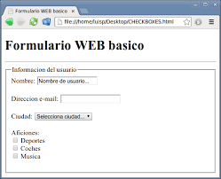

HTML5 es un lenguaje markup (de hecho, las siglas de HTML significan Hyper Text Markup Language) usado para estructurar y presentar el contenido para la web. Ademas es una combinación de nuevas etiquetas html, propiedades CSS3, JavaScript y algunas tecnologías
complementarias de apoyo, pero que técnicamente son independientes de la propia especificación HTML5.
Podemos definir la especificación HTML5 como nuevos elementos de markup o sintaxis, utilizados por los diseñadores para crear páginas web junto con las etiquetas utilizadas a día de hoy.
Un elemento HTML se define mediante una etiqueta de inicio, algo de contenido y una etiqueta de finalización.
< nombre de etiqueta > El contenido va aquí ... < / nombre de etiqueta >
Los atributos HTML proporcionan información adicional sobre los elementos HTML.
La familia HTML5 incluye las nuevas etiquetas y tecnologías como CSS3,
Geolocalización, Almacenamiento Web (Web Storage), Web Workers y Web
Sockets entre otras. Todas ellas suponen una actualización de gran
potencia al conjunto de herramientas ya existente, y con ellas se pueden
crear páginas web más sofisticadas y útiles.
La especificación HTML5 incluye etiquetas que nos permiten integrar contenidos multimedia sin necesidad de complementos de navegador.
Cada boton controla una esquina.
1.- Esquina superior izquierda
2.- Esquina inferior izquierda
3.- Esquina superior derecha
4.- Esquina inferior derecha
Escribe el numerio de lineas que quieres por esquina en cada caja.
Para insertar un vídeo en nuestra web tenemos 2 formas: Youtube u otras webs de vídeos que permitan compartir vídeos en nuestra web.
Atributos de la etiqueta video:
Ivoox u otras webs de audios que permitan compartir vídeos en nuestra web.
Atributos de la etiqueta audio
Figcaption define un titulo para un elemento

Muchos diseñadores web necesitan crear formularios en donde los datos tienen que comprobarse antes de enviarlos al servidor. Es casi obligado que el usuario, por ejemplo, tenga que escribir una dirección de correo electrónico en un campo de un formulario.
HTML5 además resuelve el caso de ciertas etiquetas que aparecen en HTML 4.01 pero que han quedado obsoletas o necesitaban ciertas precisiones, como ocurre con i, b, small, strong y abbr, que ahora tienen significados y usos nuevos con HTML5.
Las APIs (Application Programming Interfaces o, en español, Interfaces de Programación de Aplicaciones o simplemente "interfaces de programación") son una forma de crear aplicaciones utilizando componentes preconfigurados cuyo uso no se restringe a la web.Ofrecen APIs al público de manera que los diseñadores y desarrolladores pueden con ellas integrar algunas de sus funcionalidades dentro de sus propios sitios web (y también sirven para otros fines, como por ejemplo para crear aplicaciones para teléfonos móviles o aplicaciones personalizadas para equipos de escritorio). Uno de los objetivos principales de una API es el de normalizar el modo de trabajo de ciertos mecanismos y simplificar tareas de programación, que de lo contrario, serían bastante complejas. Las APIs son un aspecto muy importante dentro del entorno de HTML5 y hay una serie de ellas que conviene conocer, como Web Storage, Microdata o Geolocation, entre otras
Es un marco de programación que resuelve problemas de rendimiento de los navegadores. Al acceder a aplicaciones web avanzadas, como las de mapas o aquellas que generan gráficos o diagramas al entrar en la página web, se inician ciertas operaciones de computación que consumen una gran cantidad de recursos de procesador y que pueden reducir notablemente el rendimiento de la aplicación.
El Almacenamiento Web (Web Storage) es un ejemplo de uso de modelos preexistentes de tecnologías web bajo nuevas modalidades, más potentes.
El Web Storage mejora el concepto de cookies del navegador. Actualmente las cookies permiten que los sitios web puedan guardar información en cantidades
muy reducidas en los equipos de los usuarios, datos que normalmente sirven para volver a utilizarlos en momentos posteriores, y de esta manera, por ejemplo,
ciertos sitios web recuerdan la información del usuario desde el último acceso.
El Almacenamiento Web (Web Storage) es un ejemplo de uso de modelos preexistentes de tecnologías web bajo nuevas modalidades, más potentes. El Web Storage mejora
el concepto de cookies del navegador. Actualmente las cookies permiten que los sitios web puedan guardar información en cantidades muy reducidas en los equipos de los usuarios, datos que normalmente
sirven para volver a utilizarlos en momentos posteriores, y de esta manera, por ejemplo, ciertos sitios web recuerdan la información del usuario desde el último acceso.

La propiedad transform de CSS nos permite rotar, cambiar la escala o sesgar un elemento de una página web.
CSS3 es posible aplicar mejoras muy interesantes a la presencia visual de una página, también podemos crear muchos efectos nuevos, como gradientes de color o sombreados. La descripción del espacio de color RGBa es otra novedad de CSS3, ya que la "a" representa el grado de transparencia (o "alpha"). Con la notación RGBa de color ahora podemos aplicar efectos de transparencia a cualquier objeto de la página.
El soporte para añadir tipos de letra especiales a las páginas web mediante la propiedad @font-face, que permite especificar una fuente concreta y un enlace desde el cual el navegador pueda descargarla.
Lanzar una consulta al navegador para determinar el tipo de pantalla en el cual se va a restituir la página y, a partir de esta información, enviar un estilo específico, optimizado para esas dimensiones.
En conclusión, considero que HTML aporta mucho a la estructura de una página web, cuenta con distintas etiquetas para distintos fines, aunque incorpora nuevas etiquetas para tener un diseño agradable a la vista y animaciones necesita complemetarse con CSS y Javascrip, la conjunción de los tres hacen que se complementen en áreas que no tienen muchas habilidades, donde pueden desenvolverse a creatividad de cada uno que tenga en mente diseñar. Por otro lado se encuentran las API's que seran muy utilizadas en el futuro y tambien en la actualidad lo son, ya que unas son diseñadas sola para la web y otras que se utilizan para las aplicacion de escritorio y celular, ya es comun ver aplicaciones desarrolladas mediante API's y no por nada Google y Facebook tienes sus respectivos Freamworks por Facebook tiene (React) y por el lado de Google (Angular).
Las páginas web requieren muchos elementos a considerar para su creación, pero los principales conceptos que debemos saber son HTML Y CSS, ya que esto es la estructura y diseño de un sitio web. Actualmente HTML5 y CSS3 son los lenguajes utilizados para la realización de sitio web, por lo cual hay que saber las etiquetas y atributos de esta versión, ya que hay muchos atributos de versiones anteriores que ya no funcionan actualmente, por lo que hay que estar actualizado. Existen un amplio número de etiquetas de HTML para diferentes funciones, entra las más usadas se encuentran etiquetas de video, de audio, entre muchas otras. También existen un sin fin número de propiedades de CSS, entre las principales se encuentran fondos, bordes colores, etc. Las actuales versiones de HTML Y CSS mejoran las funciones y propiedades de versiones anteriores, estos lenguajes han ido cambiando conforme pasa el tiempo a las necesidades actuales.
HTML5 es de gran ayuda para darle un formato a la pagina, pero puede hacerse mejor con la ayuda de las animaciones que nos brindan JavaScript y CSS, en caso de querer darle una vista mas llamativa para el usuario que navegue en la pagina, pero por si solo HTML5 nos brinda una gran variedad de etiquetas con las que podemos hacer una pagina bien diseñada si las etiquetas son utilizadas de una forma inteligente para darle un buen diseño a la pagina, si se quiere mejorar el diseño se implementan animaciones con Java o CSS.
En conclusion yo pienso que el HTML es esencial en la elaboracion de paginas web, no es indispensable, ya que se pueden hacer paginas web sin esta herramienta y sin embargo abrió una puerta al mundo permitiéndole a las personas expresar sus ideas por medio de páginas. Siento que ha ido avanzando y evoluacionando a traves de la evolucion de la web, se ha hecho cada vez mejor y mas interesante, pero por el momento es muy importante conocer este lenguaje para manejar muy bien la web, y de alguna manera mas sencilla, sobretodo en la creacion de paginas web.
He llegado a la conclusión de que el lenguaje HTML5 ha llegado con diversas actualizaciones respecto al HTML 4.0, me impresionó ver que ya no es necesario la etiqueta div para dividir información por lo que con esta innovación podemos usar header, section, article, aside, footer, nav entre otros y cada uno de estos incluye una mejora en la separación de los mismos, esto me ayudó a pensar acerca que toda las tecnologías emergentes siempre están en una mejora continua.